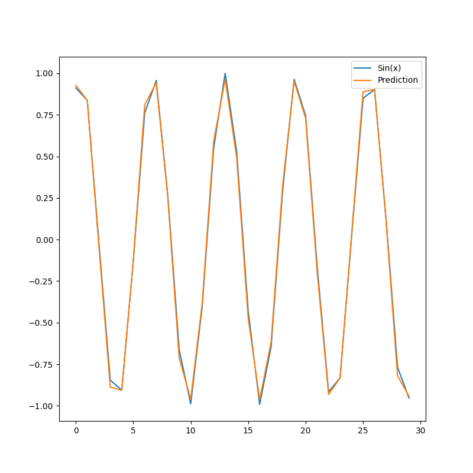

Note
Go to the end to download the full example code.
Recurrent networks for time series analysis
This script implements a model to predict values of a simple sine function. It uses recurrent layers to handle the sequential nature of the sine function.
torch.Size([280, 20, 1]) torch.Size([280, 1])
Model summary:
Input - Output: ((20, 1))
RNN - (Input, Output): ((20, 1), 1) - Parameters: 131
Tanh - Output: (1)
Total number of parameters: 131
Epoch: 1 - Metrics: {'loss': '0.0127'}
Epoch: 2 - Metrics: {'loss': '0.0057'}
Epoch: 3 - Metrics: {'loss': '0.0051'}
Epoch: 4 - Metrics: {'loss': '0.0020'}
Epoch: 5 - Metrics: {'loss': '0.0009'}
Epoch: 6 - Metrics: {'loss': '0.0007'}
Epoch: 7 - Metrics: {'loss': '0.0020'}
Epoch: 8 - Metrics: {'loss': '0.0007'}
Epoch: 9 - Metrics: {'loss': '0.0006'}
Epoch: 10 - Metrics: {'loss': '0.0010'}
Epoch: 11 - Metrics: {'loss': '0.0016'}
Epoch: 12 - Metrics: {'loss': '0.0013'}
Epoch: 13 - Metrics: {'loss': '0.0009'}
Epoch: 14 - Metrics: {'loss': '0.0005'}
Epoch: 15 - Metrics: {'loss': '0.0007'}
Epoch: 16 - Metrics: {'loss': '0.0004'}
Epoch: 17 - Metrics: {'loss': '0.0010'}
Epoch: 18 - Metrics: {'loss': '0.0003'}
Epoch: 19 - Metrics: {'loss': '0.0005'}
Epoch: 20 - Metrics: {'loss': '0.0009'}
import torch
import matplotlib.pyplot as plt
from DLL.DeepLearning.Layers import RNN, LSTM
from DLL.DeepLearning.Model import Model
from DLL.DeepLearning.Layers.Activations import Tanh
from DLL.DeepLearning.Optimisers import ADAM
from DLL.DeepLearning.Losses import MSE
device = torch.device("cuda") if torch.cuda.is_available() else torch.device("cpu")
size = 300
sequence_length = 20
data = torch.sin(torch.arange(size, dtype=torch.float32))
x = []
y = []
for start in range(size - sequence_length):
x.append(data[start:start + sequence_length])
y.append(data[start + sequence_length])
x = torch.stack(x).reshape(len(x), sequence_length, 1).to(device=device)
y = torch.stack(y).reshape(len(y), 1).to(device=device)
print(x.shape, y.shape)
model = Model((sequence_length, 1), device=device)
model.add(RNN((1,), 10, activation=Tanh()))
model.compile(optimiser=ADAM(), loss=MSE(), metrics=["loss", "val_loss"])
model.summary()
model.fit(x, y, epochs=20, batch_size=1, verbose=True)
data = torch.sin(torch.arange(size, dtype=torch.float32, device=device))
prediction = []
y_true = []
for start in range(30):
prediction.append(model.predict(data[start:start + sequence_length].reshape(1, sequence_length, 1)))
y_true.append(data[start + sequence_length])
plt.figure(figsize=(8, 8))
plt.plot(torch.stack(y_true).cpu().numpy(), label="Sin(x)")
plt.plot(torch.stack(prediction).cpu().flatten().numpy(), label="Prediction")
plt.legend()
plt.show()
Total running time of the script: (0 minutes 9.473 seconds)